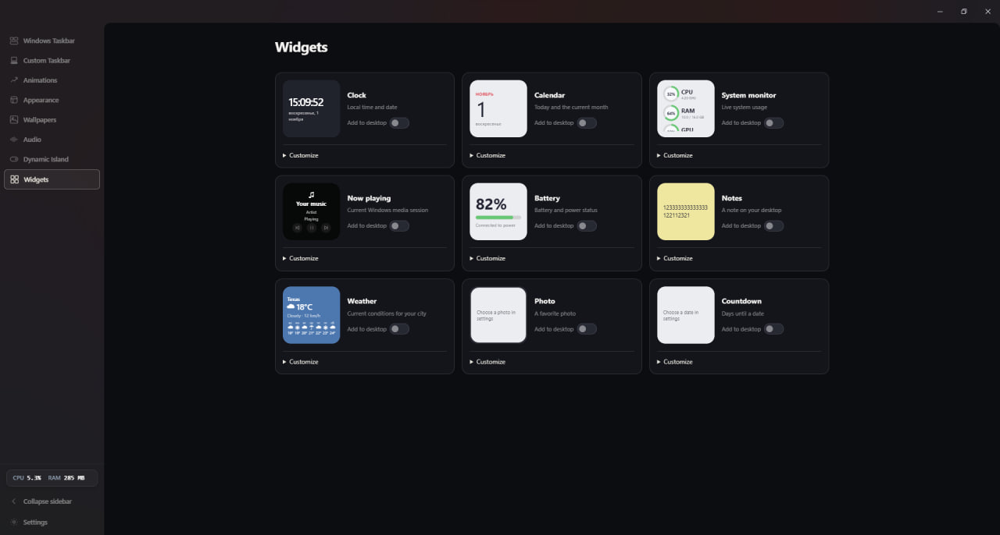
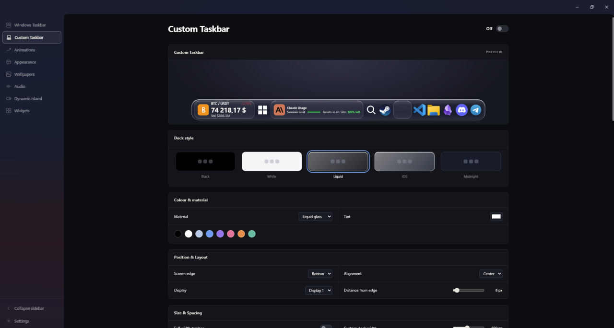
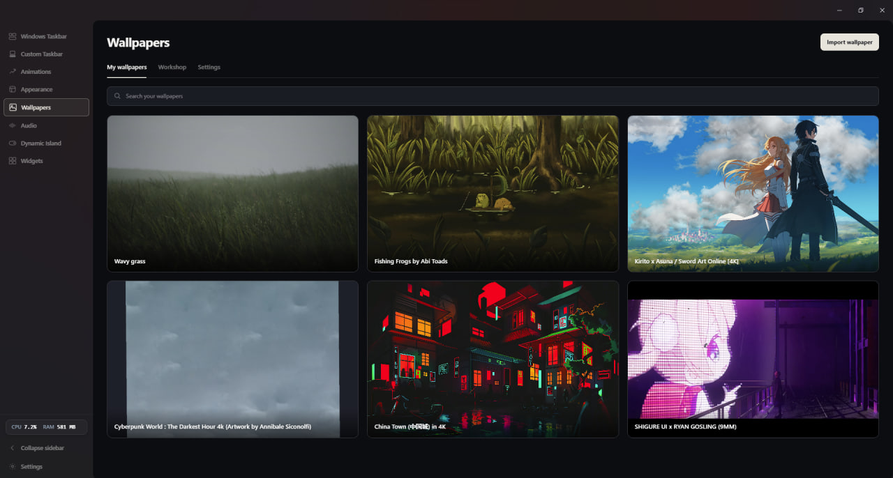
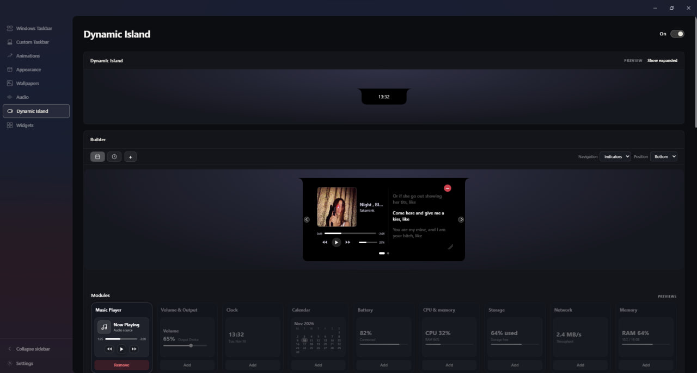
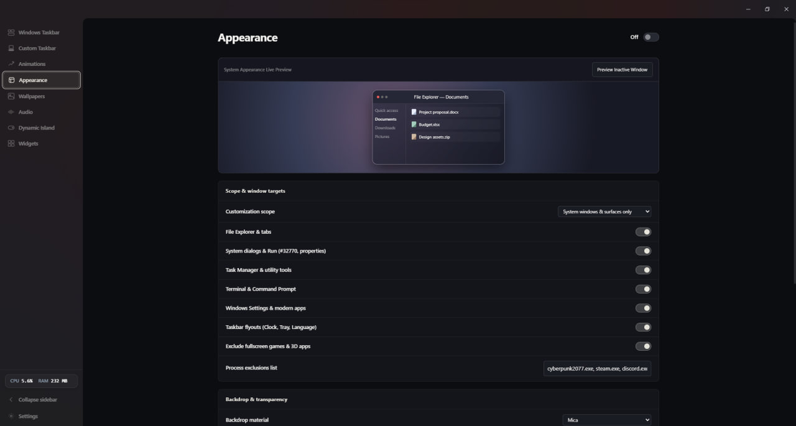

Widgets
01Keep the little things close, from the time and weather to notes and media.
Make the place you spend time feel like it belongs to you. Atelier brings your Windows desktop to life, one detail at a time.

From the taskbar you use every day to the wallpaper behind it all, Atelier gives you thoughtful ways to make Windows your own.
Keep the familiar Windows taskbar and make it yours, or switch things up with a custom desktop dock. Adjust the look, position, and behavior to fit the way you work.
Bring movement to your background with live video and supported 2D scene wallpapers. Build a personal library and find a look for every mood.


Keep the little things close, from the time and weather to notes and media.

Bring media controls, a calendar, and battery status together at the top of your screen.

Fine-tune materials, transparency, and window details throughout your desktop.
Make the everyday a little more personal.
Download